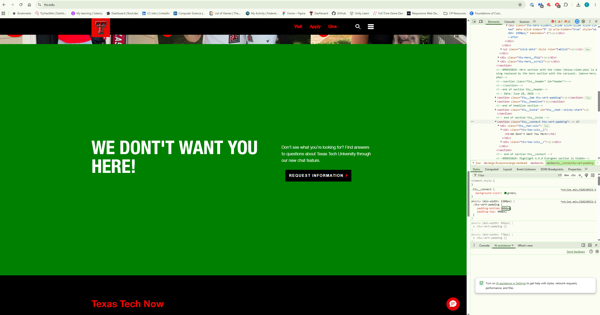

My Dev Tools Vandalism
I used browser developer tools to temporarily "vandalize" ttu.edu. Below is a screenshot showing my changes. These edits only appeared on my computer and did not affect the actual website.

What I "Vandalized"
I only made a few significant changes to the ttu.edu website. These changes resulted in a rather dramatic and humorous effect however.
- I modified the a header to say "We Don't Want You Here!" instead of the original welcoming message.
- I modified the background color from TTU red to green, and modified the top and bottom padding around the text to a ridiculous amount of 400px.
- What made your edits interesting or amusing? - The unexpected humor of seeing the website transformed in such a dramatic way from a nice welcoming messge to a chaotic and absurd appearance.
- Did you understand why some changes worked and some didn't? - Yes, I understood that in some cases, there were specific inherited styles that kept some of my changes from taking effect.
- Why did you choose the changes you did? - I wanted to create a humorous and unexpected effect by drastically altering the website's appearance.
- Were you able to understand how the HTML and CSS worked together to make the changes you made? - Yes, I was able to see how the HTML structure and CSS styles interacted to produce the final result.
- Do you think you have a better sense of how dev tools can be used while crafting your own webpages? - Yes, using dev tools allowed me to experiment with different styles and layouts without affecting the original website.